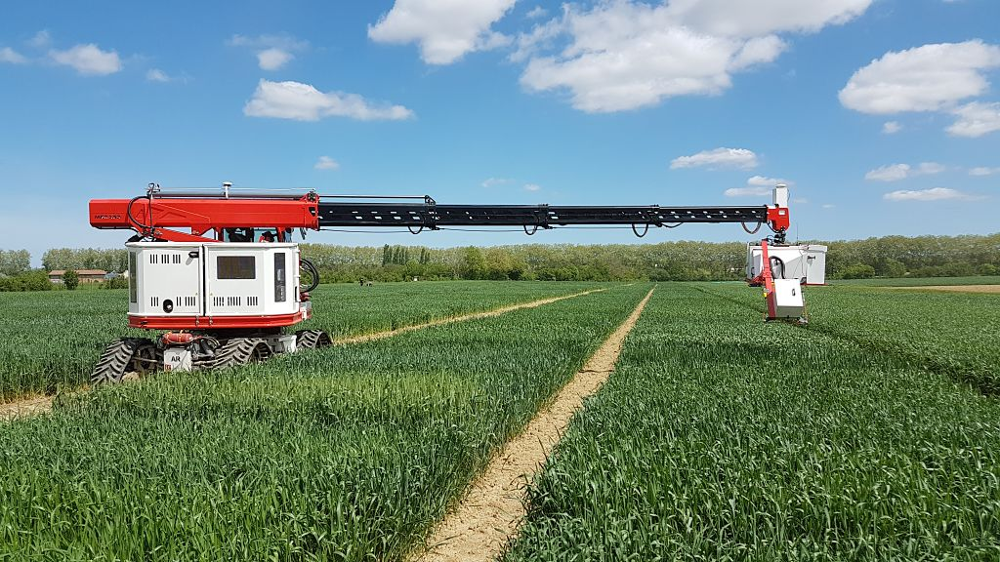
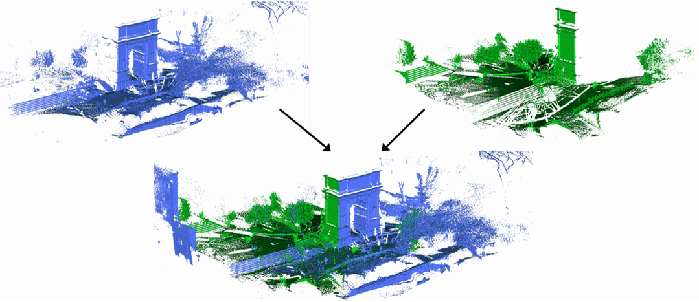
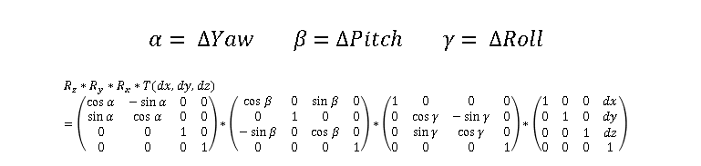
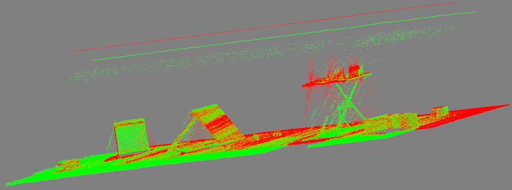
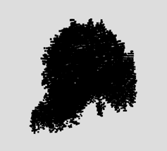
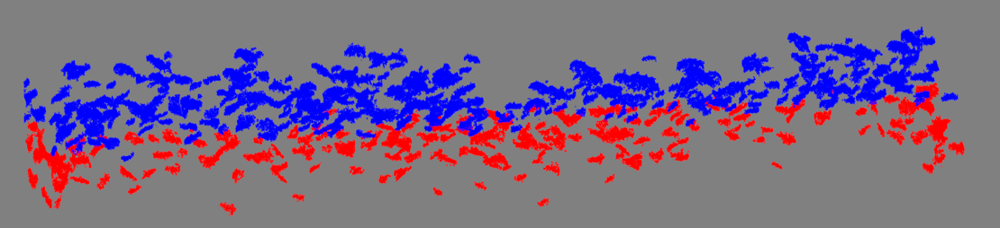
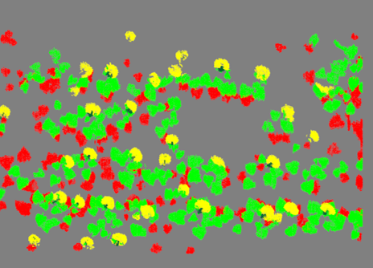
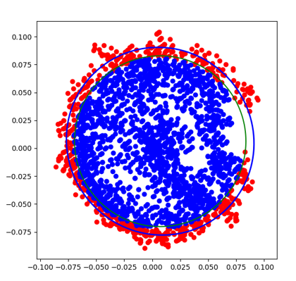

My internship at INRAE
I did my 5th year internship at INRAE.
INRAE is the French public research institute working for the coherent and sustainable
development
of agriculture, food and the environment.
From February 7th 2022 to July 15th 2022, I updated the exploitation method
of the LiDARs (light detection and ranging) of the Phénomobile, a robot allowing high
throughput
phenotyping, and then I developed an application of these
LiDARs on sunflower plots.
The Phénomobile
 The Phénomobile is a robot ordered by INRAE used to study plants in a field. It travels autonomously through the plots and collects large scale data on the state of the plants thanks to onboard sensors:
- - 3 Sick LMS400 LiDARs allowing the acquisition of three point clouds of a plot
- - 3 Baumer VLG40C RGB cameras to acquire several colour images of a plot
- - 2 Airphen V3 multispectral cameras to acquire multiple multispectral images of a plot
- - 5 LUMIX FR60 Flashes to control the lighting during an acquisition
With the technology it possesses, this autonomous robot allows for a fine and unambiguous characterisation of the microplots of an experimental platform.
Goals of the internship
The three LiDARs of the Phenomobile are used to acquire point clouds on crop canopies in the field. The objective of my internship is to propose methods of exploitation of these point clouds through two steps:
- - The global registration of three point clouds in the same reference frame. Thus, we will have the information contained in the three point clouds in a single cloud. This one will be denser, which will allow us to have more details on plants.
- - Point cloud segmentation to isolate plant organs in the case of sunflower. During the internship I started with a first organ of the sunflower which seemed to be the easiest to detect, the capitulum (the sunflower flower head) on sunflower plots to be able to calculate the diameter of each of the capitula.
Global Registration of point clouds
 The LiDARs of the Phénomobile are mounted on the same measuring head. We assume that they are static between them. There are two LiDARs with vertical views and a third one, with a lateral view. The goal is to align the point clouds with each other by applying rigid transformations to them. This will allow us to move from a local reference frame for each LiDAR to a common reference frame.
Registration Method

Each rigid transformation has six parameters that we need to find: three for the rotation
and
three for the translation.
We look for parameters such that after the application of the rigid transformations the
distance
between corresponding points in each point cloud is equal to zero.
To find these parameters we will use an optimization algorithm: the Nelder-Mead algorithm
implemented in the
SciPy library.
This algorithm seeks to minimize a function, here the distance
between corresponding points in each point cloud.
Preprocessing
To use the optimization algorithm, we did an acquisition of multiple differently oriented tables. We decided to use tables because it will be easier to find corresponding points in each point cloud. However, before any operation, we need to preprocess the point clouds. We removed the ground and the noise from each point clouds.
Results
Now we only have to use the algorithm to find the best parameters. Here is the result of the global registration:
Capitula Detection to calculate their diameter
Measuring the diameter of the flower heads allow us to identify the most interesting sunflower varieties. However, measuring them by hand on plots is a tedious process. It is therefore interesting to find a way to measure them automatically. To do this, we first need to find a way to detect them in a sunflower plot, and then develop a method to calculate their diameters.
Detection Method
Because the shape and orientation of the capitula varies a lot in the point clouds, I decided to train a supervised neural network to detect them.
Preprocessing
Before doing anything, we need to preprocess the sunflower plot point clouds to make them
usable.
First of all, thanks to the global registration we can merge all the point clouds into one
denser point cloud with more information.
Then we need to remove the ground and the noise:
Dataset creation

With usable data, we can start creating the training dataset.
Because it is complex to separate each plant in point cloud, I decided to clusterize the
point cloud using DBSCAN.
In every case the capitula are located on the top part of the plot. So, I decided to only keep the clusters located in this area.

The dataset is composed of three classes: capitulum, top of stem and leaf.
It was created using various clusters from different plots at different stage of growing.
Training

We used PointNet++, a Deep Learning model from the University of Stanford
for classification or point cloud segmentation, to train our dataset.
The dataset was divided in two part with an 80/20 ratio.
80% of the dataset was used for the training and the other 20% was used for testing.
We obtained a precision of 89% and an mAP of 74%.
Diameter calculation
 Now that we can detect the capitula, we can extract them from the pointcloud and fit a circle on them. The diameter of the circle will be the diameter of capitula.